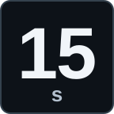
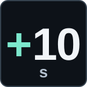
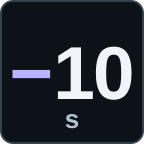
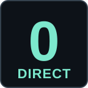

TEMHALO
Touches Stream Deck
Aperçu des touches




Stream Deck
Sélectionnez une touche pour voir ses réglages.
Délai prédéfini
TemhalosEnregistré
Retour au direct 0 s
Aucun réglage nécessaire pour cette touche.
À l’appui : appliquer ce délai à la cible.
Temhalo reliéConnexion ⌄
Une connexion commune à toutes vos touches.
Où trouver le lien ?
Dans Temhalo : Diffusion → Options → Dock OBS → Copier le lien privé du dock.
Vérifier la lisibilité
Images de 72 × 72 px · taille en pixels, sans agrandissement
Prototype uniquement : aucun accès à Temhalo, à Stream Deck ou au presse-papiers. La connexion et l’enregistrement sont simulés, en mémoire.